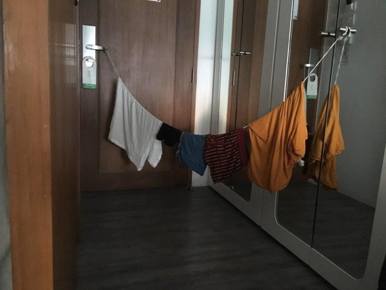
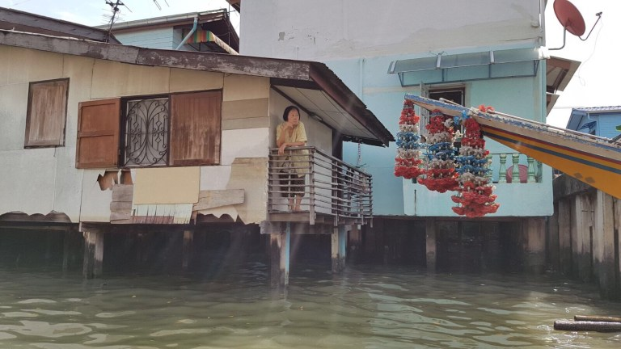
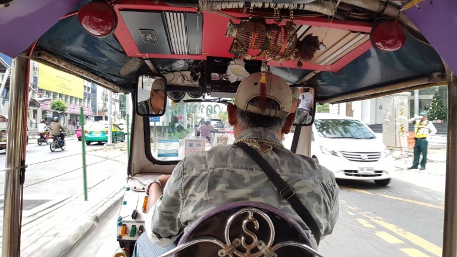

All’alba del 4° giorno il mio corpo (e il mio stomaco che brontola malgrado il buonissimo sushi mangiato a cena) non si è ancora abituato al cambio di orario. Sono le 6 a.m. ora locale e, mentre Carlo se la ronfa senza pudore, sto cercando di memorizzare qualche parola in thailandese:
- Buongiorno: sawat di khrap
- Grazie: kop khun khrap
- Si: tchaï
- No: may tchaï
Bangkok a primo impatto è caotica ed imponente: palazzi giganti, ampie strade,.. e puzza. Aveva ragione l’Yvonne. Inizialmente non ci dava fastidio, ma più passano i giorni e più ad ogni passo veniamo a conoscenza di una fragranza diversa, che sia aroma di cibi strani, smog, puzza di rifiuti per strada (con tanto di simpatiche pantegane), etc.
Poco male, perché puzziamo anche noi. “Questa maglia profuma ancora di casa” -cit. Zio Ivan, è stata una massima che ci ha accompagnato purtroppo per troppo poco tempo..
Ieri abbiamo fatto un giro sul canale Khlong Mon.
Questa è la “vecchia” Bangkok: una vera e propria città nella città, fatta di case in legno di teak affacciate su un fitto sentiero di canali (Khlongs). Durante il tragitto ci affiancavano altre imbarcazioni con a bordo delle persone del posto che cercavano di venderci qualsiasi cosa. La povertà che si vede per le strade di Bangkok non è niente in confronto a quella che si vede in questi canali.. e gli abitanti non sembrano nemmeno accorgersene.
Avevamo un piano su dove recarci, quando una signora per strada ci ha fermato e augurato buon anno, chiedendoci da dove venissimo. Poi, dopo un monologo in quello che doveva essere inglese ma che suonava più come sanscrito, ha tirato fuori dalla borsa un taccuino su cui ha scritto una lista di luoghi da visitare, ha fermato un “tuk-tukaro” e gli ha chiesto di accompagnarci in ognuno di questi posti contrattando per noi un prezzo di soli 40 baht (poco più di 1 fr. – prezzo che non siamo mai più riusciti a contrattare con altri). Ci ha poi salutati con il tipico inchino e le mani congiunte augurandoci ogni bene.
Per qualche secondo ho cercato di capire -tipica mentalità occidentale (e da economista..)- in che modo ci avesse guadagnato (magari il tuk-tukaro era suo parente, il quale faceva finta casualmente di aggirarsi nei dintorni), sebbene fossi a conoscenza dell’innata gentilezza ed ospitalità del popolo asiatico (P.J. in primis me l’ha decantata a lungo)… per fortuna che ci ha “scombussolato i piani” quella gentile signora..
Un signore, che ci ha visti vagare per il Wat Thai, ci ha accompagnato e fatto pregare Lucky Buddha, spiegandoci che in Thailandia al 90% sono buddhisti, all’8% sono musulmani e al 2% cristiani: “a mix of religions, all living in harmony“. Poi si è fermato a chiederci di noi e a raccontarci la sua storia.
Il sole sorge, vado a magnà. Alla prossima 😊
Comment Section